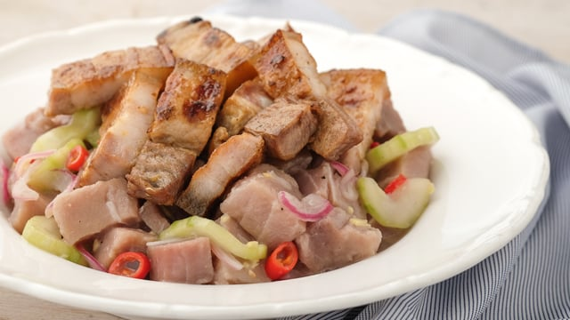

What is Sinuglaw?
Sinugba and Kinilaw is what Sinuglaw is, a marriage of two totally opposite dishes, both delicious in its own ways. Sinugba and Kinilaw are both types of food preparation methods popular in Visayas and Mindanao, sinugba means grilled and kinilaw which means soaked in cone citric acid or vinegar.
Ingredients :
400 g grilled pork belly, chopped
400 g fresh snapper (or any white flesh fish), cubed
1 large cucumber, cubed
1 1/2 cup cane vinegar
1 red onion, sliced
2 tbsp ginger, minced
juice from 1 lemon
4 pcs bird’s eye chillies, chopped
salt
freshly ground black pepper
Instructions :
In a non-reactive bowl soak snapper in 3/4 cup of vinegar. Set it aside for 10 minutes.
Using your hands gently press the fish meat to remove excess liquid. Drain the vinegar.
Add the cucumber, onion, ginger, chillies and salt. Combine it well.
Add the lemon juice, then pour the remaining vinegar. Let it soak for an hour while being chilled in the refrigerator.
Before serving prepare the grilled pork belly, just after cooking, chop it then combine with the fish, mix well then serve.